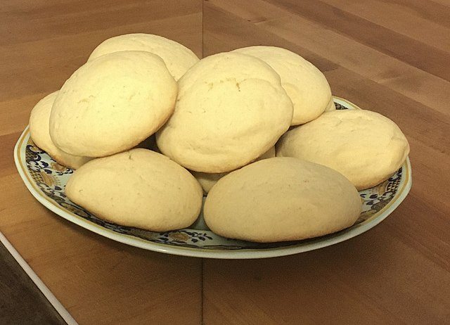

Sugar Cookies

Description
These are some of the best sugar cookies on allrecipes. They are "quick and easy" while also being "delicious, soft, and luscious". Most of the ingredients that are needed are so common that you can whip up a batch anytime.
Ingredients (makes 18 cookies)
- 1 cup butter
- 1 cup packed brown sugar
- 1 cup white sugar
- 2 eggs
- 2 tablespoons vanilla extract
- 3 cups all-purpose flour
- ½ teaspoon salt
- ½ teaspoon baking soda
- ½ teaspoon baking powder
Directions
- Preheat oven to 300 degrees F (150 degrees C). Lightly grease a cookie sheet.
- Cream together the butter or margarine, white sugar, brown sugar, and eggs. Add vanilla and stir.
- Add the flour, salt, baking soda, and baking powder and mix well.
- Drop by spoonfuls onto a lightly greased cookie sheet.
- Bake at 300 degrees F (150 degrees C) for about 12 minutes or until lightly browned.
Nutritional Facts per Cookie
- 268 calories
- 3g protein
- 39.3g carbohydrates
- 11g fat
- 47.8g cholesterol
- 197.5mg sodium
Source for recipe
Return to all recipes